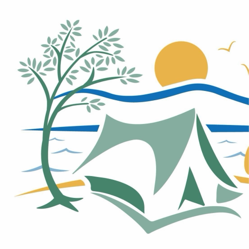

Campeurs saisonniers
Aucune connexion Internet. Les horaires et les règlements restent affichés. Ton dossier de saisonnier, la réservation et le site du camping demandent une connexion.
Une seule fois. Après, un seul tap pour ouvrir ton dossier.
Ouvre le site officiel anemonecamping.com
Première connexion ? Ton identifiant, c'est le courriel principal inscrit à ton dossier.
Les fois suivantes, tu utilises simplement le même code.
Cette page ne te demande jamais ton code ni ton mot de passe. C'est le site d'Anémone qui s'occupe de la connexion.
Ça bloque ? Appelle-nous, on va t'aider.